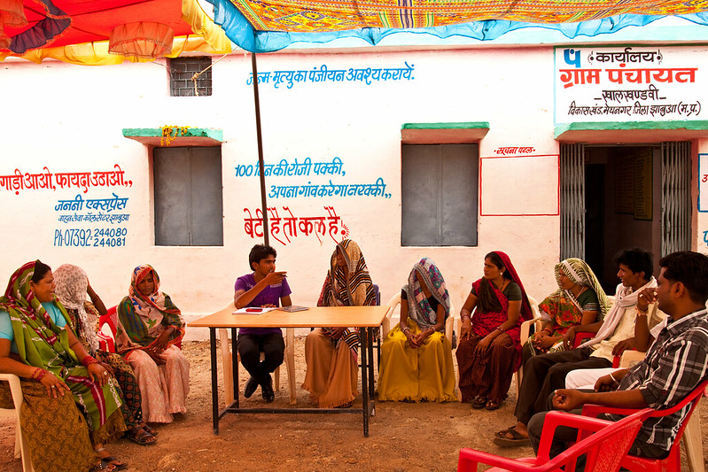

Kimberlee Chang
PhD Candidate, Department of Political Science
University of Colorado- Boulder
PhD Candidate, Department of Political Science
University of Colorado- Boulder
Welcome! I am a PhD Candidate in the Department of Political Science at the University of Colorado- Boulder. I am also an affiliate of the Center for the Governance of Natural Resources at the Institute of Behavioral Science . A large part of my research is funded by the US National Science Foundation through the Graduate Research Fellowship Program.
I use behavioral and social psychological theories to study identity politics in collective action, for the purpose of local governance and natural resource management. My work has examined how leadership styles, formal property rights, and governance rules can work through specific social psychological processes to enhance collective action of resource-dependent communities. I am particularly interested in the processes of how collective identities, social roles, norms, and moral values interact with inclusive institutional interventions such as quotas and participatory development practices to achieve inclusive governance. I strive to work in cross-disciplinary teams and produce policy relevant work that empowers vulnerable actors-- such as small holder farmers, landless laborers, resource users, women, and marginalized social groups-- in land-use politics.
I used a wide range of research design and analysis methods in my research, including household and community surveys, causal inference designs, survey experiments, field and lab experiments, text-as-data analysis, regressions with panel and cross-sectional data, Machine-Learning models, and qualitative methods. I have publish works in cross-disciplinary policy journals such as Proceedings of the National Academy of Sciences (PNAS) and Land Use Policy.
With my advisor Dr. Krister Andersson, and other scholars at the Center for the Governance of Natural Resources at the Institute of Behavioral Science, we use collective action and behavioral theory to investigate factors that induces important components of sustainable forest management, such as establishment of governance institutions (second-order collective action dilemma) and reforestation activities. Our research is grounded in the Ostrom tradition of the Institutional Analysis and Development (IAD) Framework and Ostrom (2005) and Social-Ecological System framework (Ostrom and Cox, 2010).
We have looked at the role of leadership in collective action for institutional creation, using cross-national data from the International Forestry Resources and Institutions. Using self-designed computer-based game experiments, we investigate how leadership interacts with governance network structures, and how leadership rhetoric influences discussions during Common-pool resource games. Another paper project expands on behavioral theory of individual property rights and collective psychology to develop and test theory of how collective property rights can influence group behavior. We argue that, through the process of collective psychological ownership, secure collective property rights not only enhances collective action for resource management, but also enhances general social capital in the community.
Publications:
For my dissertation, I developed a framework for analyzing local contexts for inclusive governance, that is grounded on behavioral-psychological theories of change. With data of forest-dependent communities in Indonesia, Peru and Tanzania, I use this framework to evaluate how local norms regarding women's decision-making authority influence female representatives' and non-representatives' experiences with interventions to include more female in village decision-making.
In another chapter I develop and test a theory of why social norms are not only more traditional, but are harder to change in communities that are further from reliable state and market services. Using large-scale opinion surveys as emperical evidence, I argue that in these contexts, social roles and norms of interaction hold important instrumental values for maintaining collective and individual material necessities, especially for political minorities.
As part of a core team of academics and practicioners from the Center for the Governance of Natural Resources, the CGIAR Consortium, and Indian NGO, Foundation for Ecological Security, we are designing and carrying-out an long-term intervention for inclusive governance in 4 states in India, and its evaluation designed through propensity score matching. The intervention includes a self-diagnosis tool and long-term engagements of local field offices in 1) securing formal tenure, 2) inclusion in governance committees, 3) equality in management rules, and 4) inclusion in management activities and collective vision. Our evaluation uses household surveys and village key informant surveys, covering topics including household assets, social and environmental attitudes, social network, governance participation and village institutions. It also includes some survey experiments using story vignettes.
Working papers:
With Dr. Robert Wyrod, are we investigating how controvertial large-scale Chinese funded and managed development projects are impacting local communities in Uganda. We specifically aim to digest the multi-faceted racial relations and attitudes that exists at communities where the Karuma Dam project is based, from the point of view of local community members. Our preliminary analysis suggest that individuals form complex inter-racial attitudes, and policy attitudes regarding chinese investment, based on experiences influenced by their occupation, economic dependence, and values. This project uses participatory ethnography and desk research/ text analysis of media and program websites.
Rising inequality has become especially apparent as the world experiences the economic impact of the COVID-19 pandemic. What is apparent also is the fact that these inequalities are not identity neutral. Social contexts created by the pandemic and political leaders opportunist decisions have brought these issue to the forefront, with large-scale, world-wide, protests about unequal treatment of different racial and ethnic groups springing up around the world in the United States, Palestine, Colombia and India. The protesters demand more inclusive, non-inequality perpetuating and retributive policies in security, welfare and policing. In response, supporters of status quos also staged large scale demonstrations. The rhetoric used from both sides in-person and online seems irreconcilable.
I aim to explore and test ways to bridge this divide by combining principles of dialogue and para-social contact theory. This project aims to understand the values and experiences behind different attitudes towards these movements, and find room to create common narratives between the movements. A wealth of literature in political opinion about redistributive economic policies and affirmative action policies tells us what drives policy attitudes (perception of fairness, racial identity interacted with social outlook, etc.), but does not inform us what tools we can use to change attitudes towards these identity-based redistributie policies. The first step is to use online open-ended surveys, media, and text-as-data analysis to explore the commonalities and differences in issue framing.
Outside of doing research, you can find me earning new languages, dancing, making and eating food, spending time in the ocean. I am also an avid student of sustainable agricultural practices, and native crops and food traditions.